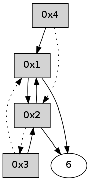

>> << IDX [start] -100 -25 -5 +0 +5 +25 +100 [330.354225159]
 Previous packets
325.002651 [Hello(4): seq=121 sym=6,1,2 sysInfo= stat=6:0,0,0,0/1:12,0,0,0/2:9,0,0,0]
325.007662 [Hello(1): seq=20 sym=2,4 sysInfo= stat=2:3,0,0,0/4:1,0,0,0]
----------------------------------------------------------------------
325.433139 beacon01(adaf) #0 coord=01,02,05,03,04,06 cycle=432.0ms assoc
-- color-indic=0 64 dc 0b
325.443100 beacon02(adaf) #0 coord=01,02,05,03,04,06 cycle=432.0ms assoc 64 8d f4
325.453099 beacon05(adaf) #0 coord=01,02,05,03,04,06 cycle=432.0ms assoc 64 2b de
325.463102 beacon03(adaf) #0 coord=01,02,05,03,04,06 cycle=432.0ms assoc 64 b7 fa
325.473101 beacon04(adaf) #0 coord=01,02,05,03,04,06 cycle=432.0ms assoc 64 11 d0
325.483101 beacon06(adaf) #0 coord=01,02,05,03,04,06 cycle=432.0ms assoc 64 65 cc
325.494782 [Hello(2): seq=620 sym=1 asym=3 sysInfo= stat=1:1,0,0,0/3:3,0,0,0]
----------------------------------------------------------------------
325.925250 beacon01(adaf) #0 coord=01,02,05,03,04,06 cycle=432.0ms assoc
-- color-indic=0 64 90 bb
325.935211 beacon02(adaf) #0 coord=01,02,05,03,04,06 cycle=432.0ms assoc 64 c1 44
325.945211 beacon05(adaf) #0 coord=01,02,05,03,04,06 cycle=432.0ms assoc 64 67 6e
325.955212 beacon03(adaf) #0 coord=01,02,05,03,04,06 cycle=432.0ms assoc 64 fb 4a
325.965212 beacon04(adaf) #0 coord=01,02,05,03,04,06 cycle=432.0ms assoc 64 5d 60
325.975213 beacon06(adaf) #0 coord=01,02,05,03,04,06 cycle=432.0ms assoc 64 29 7c
325.986880 [Hello(4): seq=122 sym=6,1,2 sysInfo= stat=6:0,0,0,0/1:13,0,0,0/2:10,0,0,0]
325.991544 [Hello(1): seq=21 sym=2,4 sysInfo= stat=2:4,0,0,0/4:1,0,0,0]
----------------------------------------------------------------------
326.417362 beacon01(adaf) #0 coord=01,02,05,03,04,06 cycle=432.0ms assoc
-- color-indic=0 64 54 d4
326.427324 beacon02(adaf) #0 coord=01,02,05,03,04,06 cycle=432.0ms assoc 64 05 2b
326.437323 beacon05(adaf) #0 coord=01,02,05,03,04,06 cycle=432.0ms assoc 64 a3 01
326.447324 beacon03(adaf) #0 coord=01,02,05,03,04,06 cycle=432.0ms assoc 64 3f 25
326.457323 beacon04(adaf) #0 coord=01,02,05,03,04,06 cycle=432.0ms assoc 64 99 0f
326.467323 beacon06(adaf) #0 coord=01,02,05,03,04,06 cycle=432.0ms assoc 64 ed 13
326.479006 [Hello(2): seq=621 sym=1 asym=3 sysInfo= stat=1:2,0,0,0/3:3,0,0,0]
----------------------------------------------------------------------
326.909469 beacon01(adaf) #0 coord=01,02,05,03,04,06 cycle=432.0ms assoc
-- color-indic=0 64 19 d3
326.919430 beacon02(adaf) #0 coord=01,02,05,03,04,06 cycle=432.0ms assoc 64 48 2c
326.929430 beacon05(adaf) #0 coord=01,02,05,03,04,06 cycle=432.0ms assoc 64 ee 06
326.939431 beacon03(adaf) #0 coord=01,02,05,03,04,06 cycle=432.0ms assoc 64 72 22
326.949432 beacon04(adaf) #0 coord=01,02,05,03,04,06 cycle=432.0ms assoc 64 d4 08
326.959432 beacon06(adaf) #0 coord=01,02,05,03,04,06 cycle=432.0ms assoc 64 a0 14
326.970849 [Hello(1): seq=22 sym=2,4 sym= sysInfo= stat=]
326.974762 [Hello(4): seq=123 sym=6,1,2 sysInfo= stat=6:0,0,0,0/1:14,0,0,0/2:11,0,0,0]
----------------------------------------------------------------------
327.401577 beacon01(adaf) #0 coord=01,02,05,03,04,06 cycle=432.0ms assoc
-- color-indic=0 64 dd bc
327.411538 beacon02(adaf) #0 coord=01,02,05,03,04,06 cycle=432.0ms assoc 64 8c 43
327.421538 beacon05(adaf) #0 coord=01,02,05,03,04,06 cycle=432.0ms assoc 64 2a 69
327.431539 beacon03(adaf) #0 coord=01,02,05,03,04,06 cycle=432.0ms assoc 64 b6 4d
327.441538 beacon04(adaf) #0 coord=01,02,05,03,04,06 cycle=432.0ms assoc 64 10 67
327.451539 beacon06(adaf) #0 coord=01,02,05,03,04,06 cycle=432.0ms assoc 64 64 7b
327.463230 [Hello(2): seq=622 sym=6,1 asym=3 sysInfo= stat=6:0,0,0,0/1:3,0,0,0/3:3,0,0,0]
----------------------------------------------------------------------
327.893685 beacon01(adaf) #0 coord=01,02,05,03,04,06 cycle=432.0ms assoc
-- color-indic=0 64 91 0c
327.903645 beacon02(adaf) #0 coord=01,02,05,03,04,06 cycle=432.0ms assoc 64 c0 f3
327.913647 beacon05(adaf) #0 coord=01,02,05,03,04,06 cycle=432.0ms assoc 64 66 d9
327.923647 beacon03(adaf) #0 coord=01,02,05,03,04,06 cycle=432.0ms assoc 64 fa fd
327.933646 beacon04(adaf) #0 coord=01,02,05,03,04,06 cycle=432.0ms assoc 64 5c d7
327.943647 beacon06(adaf) #0 coord=01,02,05,03,04,06 cycle=432.0ms assoc 64 28 cb
327.955363 [Hello(4): seq=124 sym=6,1 asym=2 sysInfo= stat=6:0,0,0,0/1:14,0,0,0/2:12,0,0,0]
327.958734 [Hello(1): seq=23 sym=2,4,6 sysInfo= stat=2:6,0,0,0/4:1,0,0,0/6:0,0,0,0]
----------------------------------------------------------------------
328.385793 beacon01(adaf) #0 coord=01,02,05,03,04,06 cycle=432.0ms assoc
-- color-indic=0 64 55 63
328.395755 beacon02(adaf) #0 coord=01,02,05,03,04,06 cycle=432.0ms assoc 64 04 9c
328.405753 beacon05(adaf) #0 coord=01,02,05,03,04,06 cycle=432.0ms assoc 64 a2 b6
328.415754 beacon03(adaf) #0 coord=01,02,05,03,04,06 cycle=432.0ms assoc 64 3e 92
328.425754 beacon04(adaf) #0 coord=01,02,05,03,04,06 cycle=432.0ms assoc 64 98 b8
328.435754 beacon06(adaf) #0 coord=01,02,05,03,04,06 cycle=432.0ms assoc 64 ec a4
328.447443 [Hello(2): seq=623 sym=6,1 asym=3 sysInfo= stat=6:1,0,0,0/1:4,0,0,0/3:3,0,0,0]
----------------------------------------------------------------------
328.877900 beacon01(adaf) #0 coord=01,02,05,03,04,06 cycle=432.0ms assoc
-- color-indic=0 64 0b 02
328.887860 beacon02(adaf) #0 coord=01,02,05,03,04,06 cycle=432.0ms assoc 64 5a fd
328.897861 beacon05(adaf) #0 coord=01,02,05,03,04,06 cycle=432.0ms assoc 64 fc d7
328.907861 beacon03(adaf) #0 coord=01,02,05,03,04,06 cycle=432.0ms assoc 64 60 f3
328.917862 beacon04(adaf) #0 coord=01,02,05,03,04,06 cycle=432.0ms assoc 64 c6 d9
328.927863 beacon06(adaf) #0 coord=01,02,05,03,04,06 cycle=432.0ms assoc 64 b2 c5
328.939535 [Hello(4): seq=125 sym=1 asym=2 sysInfo= stat=1:15,0,0,0/2:13,0,0,0]
328.943726 [Hello(1): seq=24 sym=2,4,6 sysInfo= stat=2:7,0,0,0/4:1,0,0,0/6:0,0,0,0]
----------------------------------------------------------------------
329.370009 beacon01(adaf) #0 coord=01,02,05,03,04,06 cycle=432.0ms assoc
-- color-indic=0 64 cf 6d
329.379972 beacon02(adaf) #0 coord=01,02,05,03,04,06 cycle=432.0ms assoc 64 9e 92
329.389970 beacon05(adaf) #0 coord=01,02,05,03,04,06 cycle=432.0ms assoc 64 38 b8
329.399969 beacon03(adaf) #0 coord=01,02,05,03,04,06 cycle=432.0ms assoc 64 a4 9c
329.409970 beacon04(adaf) #0 coord=01,02,05,03,04,06 cycle=432.0ms assoc 64 02 b6
329.419971 beacon06(adaf) #0 coord=01,02,05,03,04,06 cycle=432.0ms assoc 64 76 aa
329.431664 [Hello(2): seq=624 sym=6,1 asym=3 sysInfo= stat=6:1,0,0,0/1:5,0,0,0/3:3,0,0,0]
----------------------------------------------------------------------
329.862116 beacon01(adaf) #0 coord=01,02,05,03,04,06 cycle=432.0ms assoc
-- color-indic=0 64 83 dd
329.872076 beacon02(adaf) #0 coord=01,02,05,03,04,06 cycle=432.0ms assoc 64 d2 22
329.882076 beacon05(adaf) #0 coord=01,02,05,03,04,06 cycle=432.0ms assoc 64 74 08
329.892077 beacon03(adaf) #0 coord=01,02,05,03,04,06 cycle=432.0ms assoc 64 e8 2c
329.902077 beacon04(adaf) #0 coord=01,02,05,03,04,06 cycle=432.0ms assoc 64 4e 06
329.912077 beacon06(adaf) #0 coord=01,02,05,03,04,06 cycle=432.0ms assoc 64 3a 1a
329.923740 [Hello(4): seq=126 sym=1 asym=2 sysInfo= stat=1:0,0,0,0/2:14,0,0,0]
329.927419 [Hello(3): seq=126 sym=2 asym=1 asym= sysInfo= stat=2:7,0,0,0]
329.929391 [Hello(1): seq=25 sym=2,6 sysInfo= stat=2:8,0,0,0/6:0,0,0,0]